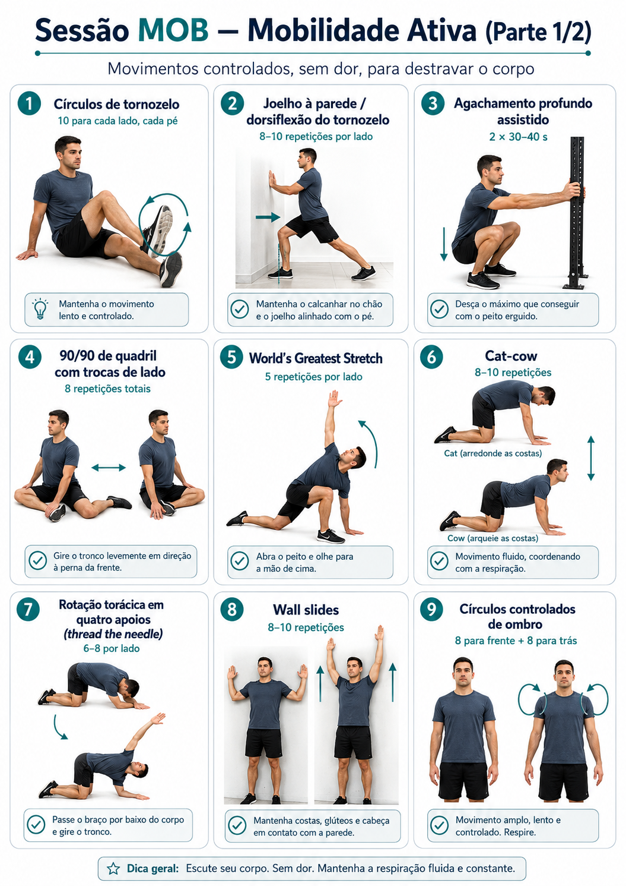
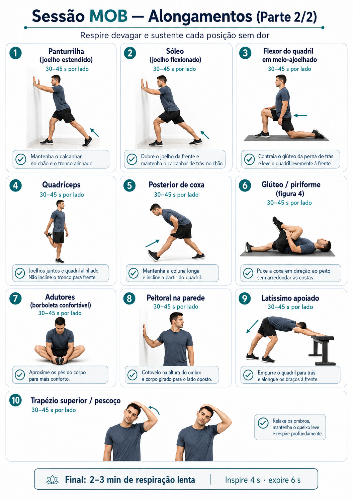

← Voltar ao painelMOB · recuperar e se mover
Caminhada leve, mobilidade ativa, alongamento e respiração. Mantenha a caminhada confortável; esta sessão não é outro treino cardiovascular forte.
Registre no painel apenas a duração total e uma nota, se quiser. Não é necessário marcar cada movimento.
1. Mobilidade ativa
Movimentos controlados, sem dor e com respiração fluida. Sequência e quantidades transcritas da prancha fornecida.
- Círculos de tornozelo
10 para cada lado, cada pé - Joelho à parede · dorsiflexão
8–10 repetições por lado - Agachamento profundo assistido
2 × 30–40 segundos - 90/90 de quadril com trocas de lado
8 repetições totais - World’s Greatest Stretch
5 repetições por lado - Cat–cow
8–10 repetições - Rotação torácica em quatro apoios
6–8 repetições por lado - Wall slides
8–10 repetições - Círculos controlados de ombro
8 para frente + 8 para trás
Ver ilustração · parte 1
Abrir imagem em tamanho completo
2. Alongamentos
A prancha indica 30–45 segundos por lado. Siga a referência ilustrada para as posições bilaterais. Sustente sem dor e respire devagar.
- Panturrilha · joelho estendido
- Sóleo · joelho flexionado
- Flexor do quadril · meio ajoelhado
- Quadríceps
- Posterior de coxa
- Glúteo / piriforme · figura 4
- Adutores · borboleta confortável
- Peitoral na parede
- Latíssimo apoiado
- Trapézio superior / pescoço
Ver ilustração · parte 2
Abrir imagem em tamanho completo
3. Respiração final
2–3 minutos de respiração lenta: inspire por 4 segundos e expire por 6 segundos.
Imagens originais fornecidas por Carlos, incorporadas sem edição. Guia e imagens incluídos no cache offline da v4.1.